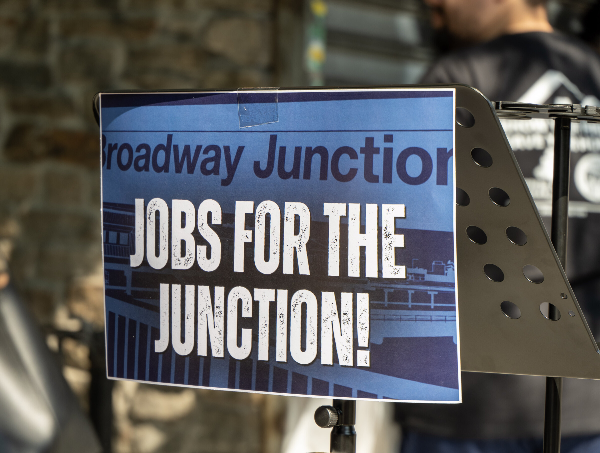

BROOKLYN — Elected officials, community leaders and residents rallied outside Broadway Junction to demand increased neighborhood hiring on the Metropolitan Transportation Authority’s $400 million ADA-accessibility and public realm project.
Council Member Sandy Nurse’s office said only 13 residents from the eight ZIP codes surrounding Broadway Junction had been hired out of nearly 170 workers as of June 2026, representing approximately 7.6% of the workforce.
The “Jobs for the Junction” rally included State Senator Jabari Brisport, Assemblywoman Latrice Walker, community board representatives, neighborhood organizations and residents.
“East New York residents have had to watch the district’s biggest public works project in decades benefit everyone else but their neighbors,” Nurse said.
Nurse said the number of nearby residents hired was unacceptable given the scale of the project and the economic conditions in the surrounding community.
Broadway Junction serves more than 100,000 passengers daily and connects five subway lines, six bus routes and the Long Island Rail Road, according to the press release issued by Nurse’s office.
The project is expected to add approximately seven elevators, new escalators and new entrances intended to improve accessibility and transit connections.
Dispute Over the Meaning of “Local”
The Broadway Junction project is described by Nurse’s office as one of the MTA’s first local hiring pilot programs.
The pilot seeks to have 20% of all hours worked performed by “local targeted workers.” According to the press release, that category includes residents of the eight surrounding ZIP codes as well as workers who live in economically disadvantaged areas elsewhere in New York State.
Under that broader definition, 30% of the work reportedly qualifies as being performed by local workers, Nurse’s office said.
Local officials argued that the broader definition does not ensure that residents living closest to Broadway Junction receive a meaningful share of the project’s employment opportunities.
“The MTA’s inadequate local hiring and disingenuous definition of a ‘local resident’ is an insult to all of our constituents who are directly impacted by this major infrastructure project,” Brisport said.
Walker said she had initially been optimistic about the investments announced for Broadway Junction, including commitments involving public space, accessibility and local employment.
“But that optimism has been diminished,” Walker said. “Only 13 local residents out of about 170 workers or just under 8% have been hired from the surrounding eight ZIP codes.”

Community Leaders Seek Accountability
Community Board 5 Chairwoman Alice Lowman said public projects should provide lasting benefits to the neighborhoods where they are located.
“The community has every right to expect transparency, accountability, and a genuine commitment to the local hiring and economic opportunities that were promised,” Lowman said.
Odessa Fynn, co-chair of Community Board 5’s Land Use and Housing Committee, said local workforce planning should include early outreach, clear information about certifications and intentional pathways for residents and businesses to participate.
“Although opportunities have been missed, there is still room to implement a transparent hiring and procurement strategy that ensures the affected communities share in the remaining economic benefits of this investment,” Fynn said.
Representatives from Community Board 16, Cypress Hills Local Development Corporation, the Junction Neighborhood Association and local business organizations also called for increased hiring, apprenticeship opportunities, local procurement and greater transparency.
According to Nurse’s office, local stakeholders have participated in monthly calls since February 2024 to monitor the project and discuss recurring concerns.
The press release also cited complaints involving illegal parking by MTA employees, trash accumulation, rat sightings near Callahan-Kelly Park and other quality-of-life conditions.
MTA Responds
In a statement provided to East New York Times, MTA spokesperson Joana Flores said:
“MTA contracts are consistent with State and Federal law. The MTA’s $400 million investment in Broadway Junction will modernize and make this station complex fully accessible, improving quality of life for riders while supporting the neighborhood’s economic growth and revitalization.”
The MTA statement did not directly address the reported figure of 13 workers from the surrounding eight ZIP codes.
East New York Times sent follow-up questions asking whether the MTA disputed that figure, how the agency defines a “local targeted worker,” and whether additional neighborhood hiring opportunities are expected before the project is completed.
The MTA did not respond to those follow-up questions by publication time.
Several facts also remain unclear, including how many nearby residents applied for positions, how many were referred or interviewed, how many additional jobs may become available and how much project spending has gone to businesses in the surrounding neighborhoods.